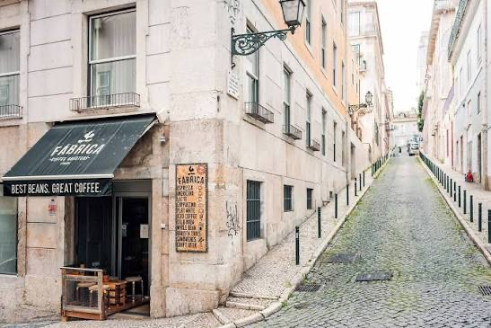
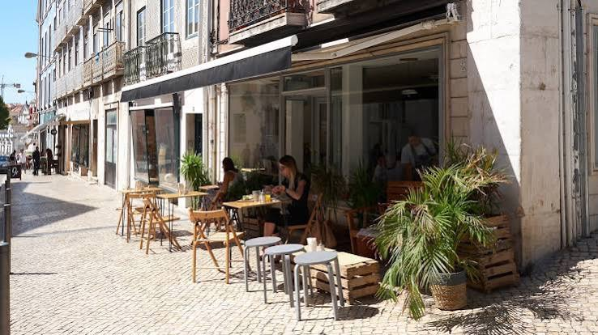
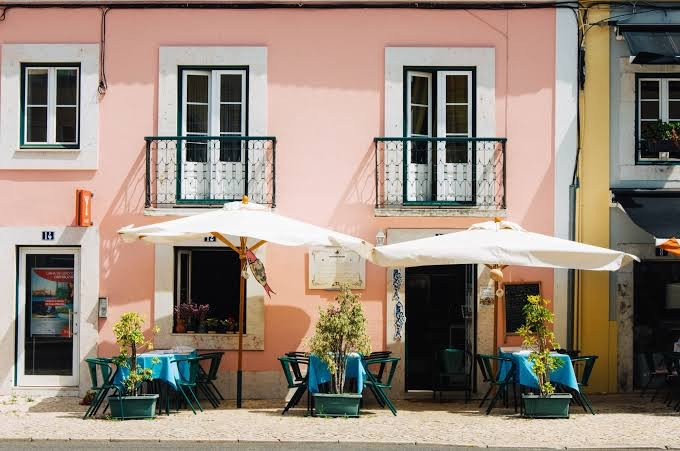

Why Lisbon?
Lisbon, the city of seven hills
Lisbon is Portugal’s hilly, coastal capital city. From imposing São Jorge Castle, the view encompasses the old city’s pastel-colored buildings, Tagus Estuary and Ponte 25 de Abril suspension bridge. Nearby, the National Azulejo Museum displays 5 centuries of decorative ceramic tiles. Just outside Lisbon is a string of Atlantic beaches, from Cascais to Estoril.
Lisbon is one of the oldest cities in the world[5] and the second-oldest European capital city (after Athens), predating other modern European capitals by centuries.[6] Settled by pre-Celtic tribes and later founded and civilised by the Phoenicians, Julius Caesar made it a municipium called Felicitas Julia,[7] adding the term to the name Olisipo. After the fall of the Roman Empire, it was ruled by a series of Germanic tribes from the 5th century, most notably the Visigoths. Later it was captured by the Moors in the 8th century. In 1147, Afonso Henriques conquered the city and in 1255, it became Portugal's capital, replacing Coimbra.[8] It has since been the political, economic, and cultural centre of the country.
Cafes
Best Cafes in Lisbon

Hygge Cafe
We are Hygge Kaffe, the restaurant inspired by the Nordic concept of well-being (Hygge), happiness, serenity, and sharing with others. The space and the menu were designed to bring a piece of this Scandinavian universe to Lisbon, created to make us feel at home, whether we are alone sipping a cappuccino, having brunch with friends, or having a business lunch.
Address:
Rua da Escola Politécnica 31, 1250-100 Lisboa, Portugal
What I like about it
The cozy atmosphere and delicious coffee.

Cafe Portugal
The story of Café Portugal is inseparable from the history of Rossio Square, the nerve center of Lisbon. The original café was a famed 18th and 19th-century institution, serving as a vital meeting point for the city's intellectual and social elite. After a period of closure, the legacy was revived by My Story Hotels, who transformed the space into a boutique gastronomic shrine.
Address:
Praça Dom Pedro IV 59, 1100-200 Lisboa, Portugal
What I like about it
The historic ambiance and traditional Portuguese coffee.

A Brasileria
A Brasileira is the beating heart of Chiado – a literary, architectural and artistic landmark that transcends generations and remains faithful to the charm and elegance of another era. More than one of Lisbon’s oldest cafés, it is its most iconic. A space where the city’s memory is served at the table, and where a coffee – a bica – still invites a pause and a conversation, under the silent gaze of Fernando Pessoa.
Address:
Rua Garrett, 120/122, 1200-205 Lisboa, Portugal
What I like about it
The amazing atmosphere and traditional Portuguese coffee.